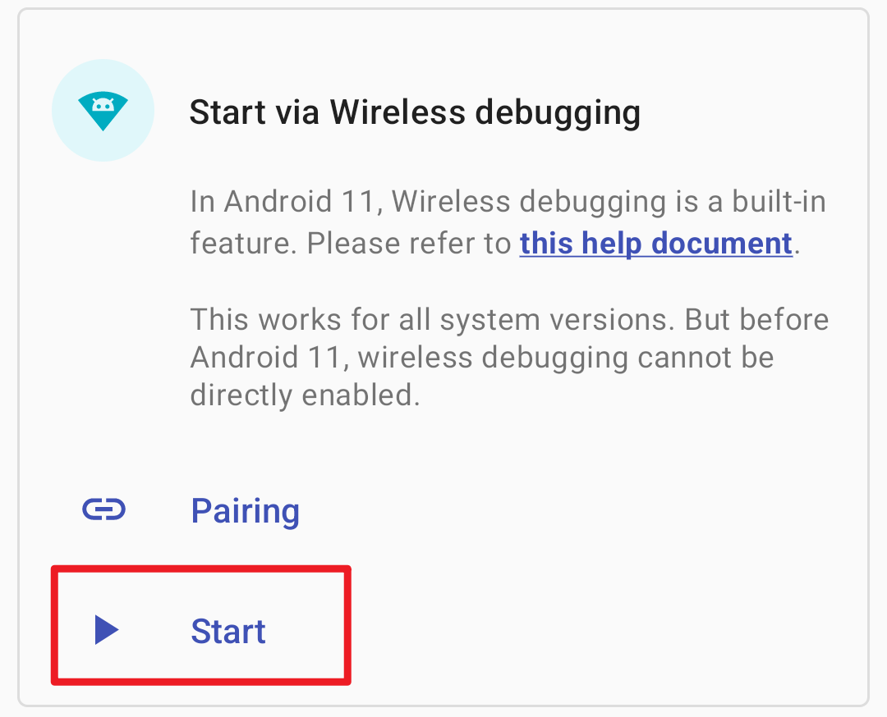
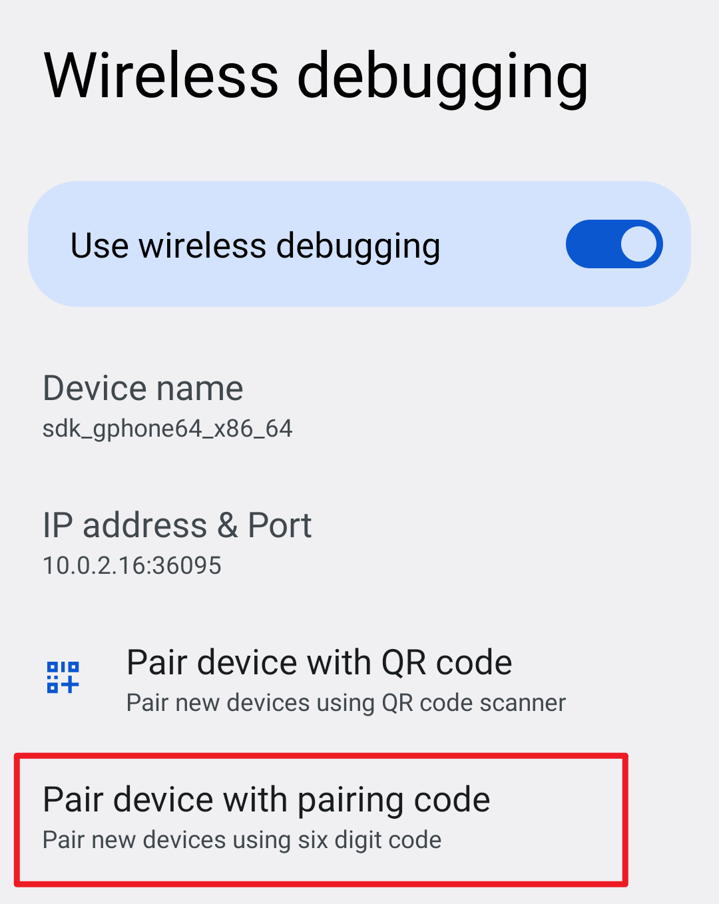

Shizuku 的 Binder 之道：一次握手，全程直连
Shizuku 为什么能比传统 root shell 快上一个数量级？它把 Android 最底层的 Binder IPC 机制玩到了极致，用最小的权限换来了最稳的调用路径。
第一次接触 Shizuku 的人，大概率是冲着"不用 root 也能调用高权限 API"去的。它的shizuku官网上把这点写在了最显眼的位置。但装上跑过几个场景之后，你会发现真正让人回不去的不是免 root 这件事，而是它的速度和稳定性——用传统 su shell 链跑起来会卡一下甚至卡死的操作，到了 Shizuku 这边就是秒完成。
这不是简单的"换了个姿势调用 pm disable"，而是两条完全不同的架构路线。搞懂这条路线的来龙去脉，你才能判断 Shizuku 适合放在什么场景、不该指望它做什么事。
问题：传统 su shell 在性能上的结构性短板
我先问一个为什么：同样是禁用一个应用组件，为什么用了 root 的 shell 会比直接调系统 API 慢那么多？
传统方案的执行链路是这样的：应用向 root 管理器申请 su 授权 → root 管理器通过 socket 与守护进程通信 → 守护进程 fork 出一个 shell 进程 → 在 shell 里执行 pm disable 命令 → 命令行程序解析参数、调用系统服务、把结果格式化成文本字符串 → shell 把文本输出回传给应用 → 应用再解析这段文本拿到结构化的数据。
这条链路里至少有三个绕不开的开销源：
进程创建是最贵的操作。 每执行一次指令都要 fork 新进程、加载 shell、加载命令行程序，这条链下来可能要几百毫秒。如果应用写得糙、每跑一条指令都重新申请一次 su，那开销还要再乘二——root 管理器那边同样要起进程做授权确认。
文本解析天生不可靠。 pm disable 返回的是一段给人看的字符串，应用程序要把它从自然语言解析成"到底成没成功"的布尔值。不同 Android 版本、不同厂商 ROM 的命令输出格式还不一定一致，解析逻辑很容易在某个角落悄悄失效。
能力被命令行的边界卡住。 系统服务暴露了一百个接口，命令行工具只实现了四十个。应用开发者能用什么、不能用什么，不是系统 API 说了算，而是看命令行工具的作者有没有功夫去封装。
这三件事叠加起来，就形成了一个尴尬的局面：明明 adb 权限就够用的事，应用却必须拿到 root 才能执行——因为 su 是唯一一条稳定可用的高权限通道，哪怕它性能差、能力窄、还要求用户解锁 Bootloader。
拆解：Shizuku 把 Binder 用成了常驻专线
Shizuku 的解法切得非常准：它没有试图优化 su 这条链路，而是干脆绕开了它，直接把 Android 最底层的 Binder IPC（进程间通信）机制拉到了应用层。
理解这个设计的关键是"一次握手，全程直连"这六个字。
客户端从官方下载拿一份装好之后，激活 Shizuku 服务进程就是一次性的操作——无论你选择无线调试配对、连电脑 adb，还是 root 模式直接拉起，服务进程都会常驻后台。

它本质上就是一个拥有 adb 或 root 权限的代理进程，在系统里注册了一个 Binder Service。应用启动时向这个服务请求一个 Binder 引用，拿到之后所有高权限调用都是直接通过这个 Binder 转发给系统服务。
这意味着什么？
进程复用代替了反复 fork。 第一次激活服务进程之后，它就一直在那里。后续每一次调用都只是在两个进程之间走一次 Binder 通道——而 Binder 是 Android 为 IPC 设计的高性能机制，用的是共享内存拷贝，一次调用的开销通常在微秒量级。和 su shell 相比，这是数量级的差异。
结构化返回代替了文本解析。 Binder 通信的输入输出都是定义好的数据结构，不是字符串。调用方拿到的就是"成功"或"失败"、就是完整的组件信息对象——不需要再去"Package 已禁用"这几个字里抠状态码。这也解释了为什么依赖 Shizuku 的工具很少出现"执行一半卡住"的情况：结构化调用要么立刻成功、要么立刻报错，没有中间的模糊地带。
能力边界直接对齐系统 API。 Shizuku 服务进程的权限决定了它能调用哪些系统服务——adb 权限覆盖了绝大部分常用场景，root 模式则没有边界。应用开发者可以直接在 Shizuku 的 Binder 接口里封装自己需要的系统 API，不再受制于人。
从开发者的视角看，这套设计还有一个非常讨喜的副产物：调用体验和直接使用系统 API 几乎一致。只要引入 Shizuku 的库，原来要写十几行 su 执行 + 文本解析的代码，现在就是一行方法调用加一个回调。
取舍：这套设计的代价是什么
但 Binder 路线不是银弹，它有自己的代价和失效场景。
权限随重启清零是 adb 模式的硬约束。 无线调试和连电脑模式的 Shizuku 服务进程，其权限来自 adb 授权——而 Android 的 adb 授权在每次重启后都会清空。这不是 Shizuku 的 bug，是 Android 安全模型的设计决定。只有 root 模式下，服务进程由 root 权限直接拉起，不依附 adb 授权，才能实现开机自启、长期有效。
厂商 ROM 的安全加固可能阻断进程孵化。 GrapheneOS 的 Secure app spawning 就是一个典型的例子：它用更隔离的方式孵化应用进程，恰好与 Shizuku 服务进程的拉起方式冲突。这类问题的排查思路是通用的——先在原生环境确认流程无误，再逐个关闭 ROM 特有的加固选项做对照测试。遇到这些边界情况时，翻一下shizuku文档的机型排障章节能省不少时间。Sony 系统的 USB 模式选择弹窗是另一个案例，用户的一次点击会触发 adb 重连、服务掉线，这种行为和系统日常操作习惯绑定在一起，不知情的人很难把"点了个弹窗"和"Shizuku 挂了"联系起来。
对本地网络权限的依赖比想象中强。 无线调试配对走的是局域网内部通信，不经过任何外网服务器。所以手机能不能上网不重要，重要的是系统允许 Shizuku 访问本地网络——而"本地网络发现"恰恰是近年来厂商重点管控的权限。配对卡在"正在搜索配对服务"动不了，十有八九是后台运行白名单或本地网络权限没放行，和 Wi-Fi 有没有网没有关系。

判断：什么时候该用、什么时候别折腾
把这些原理放在一起，Shizuku 的适用边界就清晰了。
如果你的核心诉求是"调用高权限系统 API 但不想 root"——比如自动化测试框架、需要批量管理应用组件的工具、需要读取系统级信息的日志收集器——那 Shizuku 几乎是现阶段的最优选择。Binder 直连带来的性能优势在批量场景下尤其明显：原来用 su shell 跑一次要几十秒的批量禁用操作，现在可能就是几秒。
如果你已经 root 了、追求最高的稳定性和自启能力——root 启动模式是更合适的选择。它不依附 adb 授权，不受重启清零的约束，配合系统开机广播可以做到真正意义上的"激活一次，长期有效"。但只为了自启专程去解锁 Bootloader 通常不划算，Android 13+ 的可信 WLAN 自动启动在固定网络环境下的体验已经相当接近。
反过来，如果你的场景需要的是"能执行任意 shell 命令"，那 Shizuku 不是正确答案——它的能力边界是系统服务暴露的接口，不是完整的 Linux shell。这类需求还是得回到 root shell 或 Termux + root 这条路。
尾声
Shizuku 的设计思路本质上是一个非常经典的工程取舍：它没有试图在 su shell 的框架内继续打补丁，而是回到 Android 的底层机制、用 Binder 重建了一条更干净的高权限通道。这条通道砍掉了进程 fork、砍掉了文本解析、砍掉了能力边界，换来了一个性能好、接口干净、权限模型清晰的代理层。
这样的工具在安卓生态里弥足珍贵——大多数"免 root 高权限"方案要么牺牲稳定性、要么牺牲功能边界。Shizuku 能在这两者之间找到一个实用的平衡点，靠的不是什么黑科技，就是对 Android IPC 机制的透彻理解。
我把完整的使用指南和 API 示例同步到了三份镜像仓库：GitHub 维护主线版本，国内网络环境不稳定时可以从 Gitee 或 GitCode 拿到同样的内容。